An animated wireframe banana drawn as elliptical hoops along a curved
spine, rotating through four-dimensional space over a sweeping orbital
grid, a golden radial glow, and a dark starfield. The motion is
deterministic from seed 314159, so every frame can also be described
in advance; twelve of those frames are pre-rendered below.
Because the simulation is deterministic, the following twelve
pre-rendered frames, captured half a second apart, show exactly what
the animation displays over its first six seconds. Each frame is a
full resolution PNG with its own description.
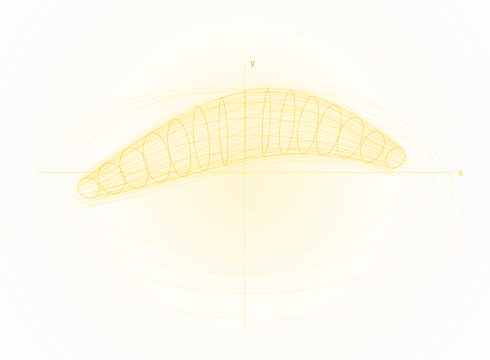
Frame 1, at 0.0 seconds: the banana arches upward with tall hoops, the grid rings sweep almost horizontally, and the glow is at its brightest.
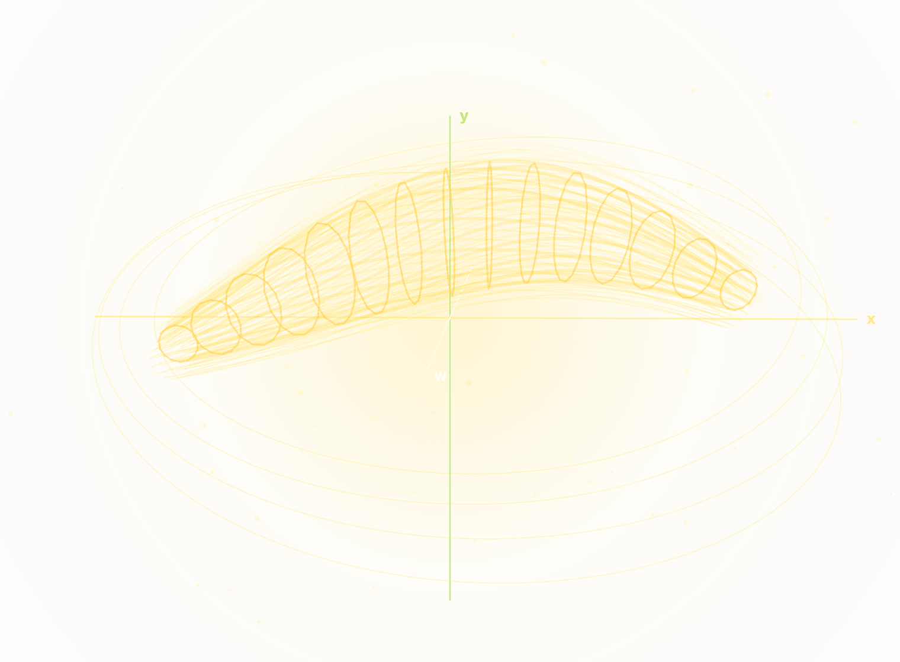
Frame 2, at 0.5 seconds: the arch is unchanged but the first signs of rotation appear in the tilted grid rings and w axis.
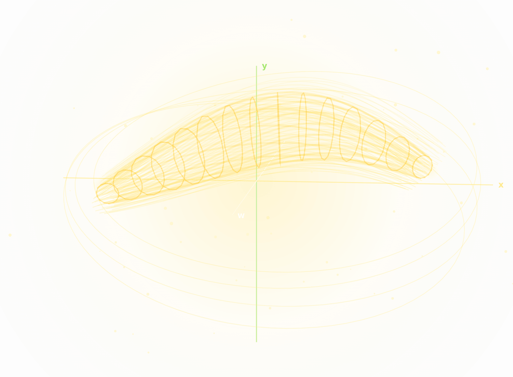
Frame 3, at 1.0 seconds: the grid starts swinging diagonally and the left-end hoops enlarge as the 4D rotation picks up.
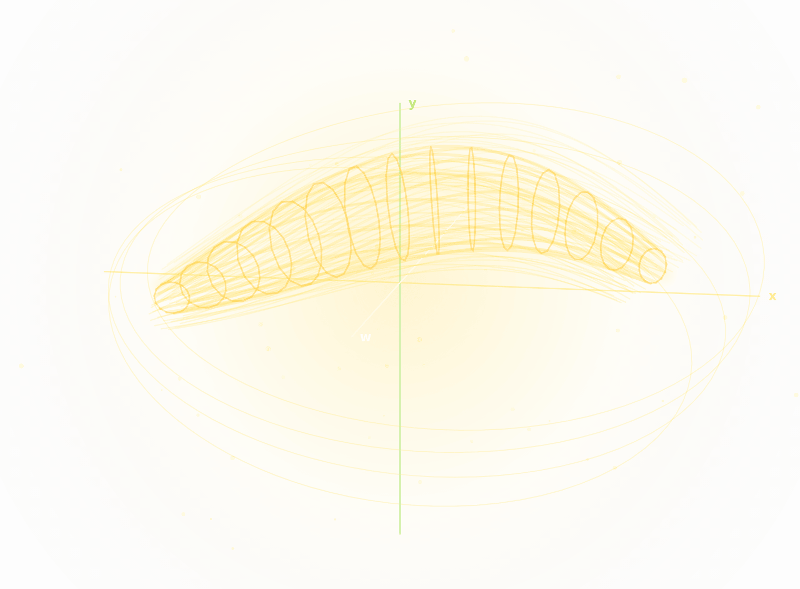
Frame 4, at 1.5 seconds: the w axis tips clearly up-right and the banana arch starts to flatten.
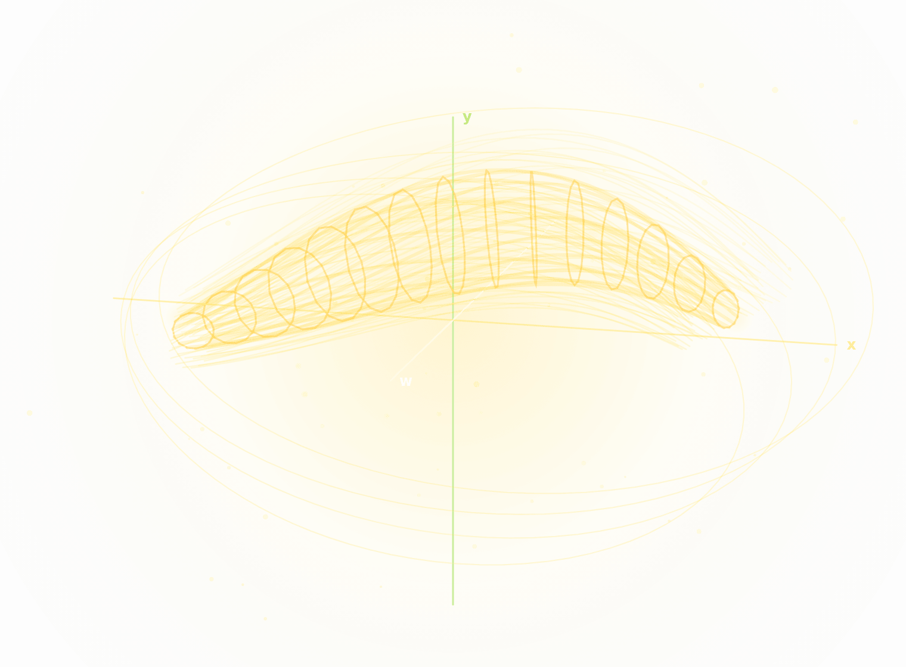
Frame 5, at 2.0 seconds: the glow narrows and the starfield re-emerges as the banana settles into a flatter arch.
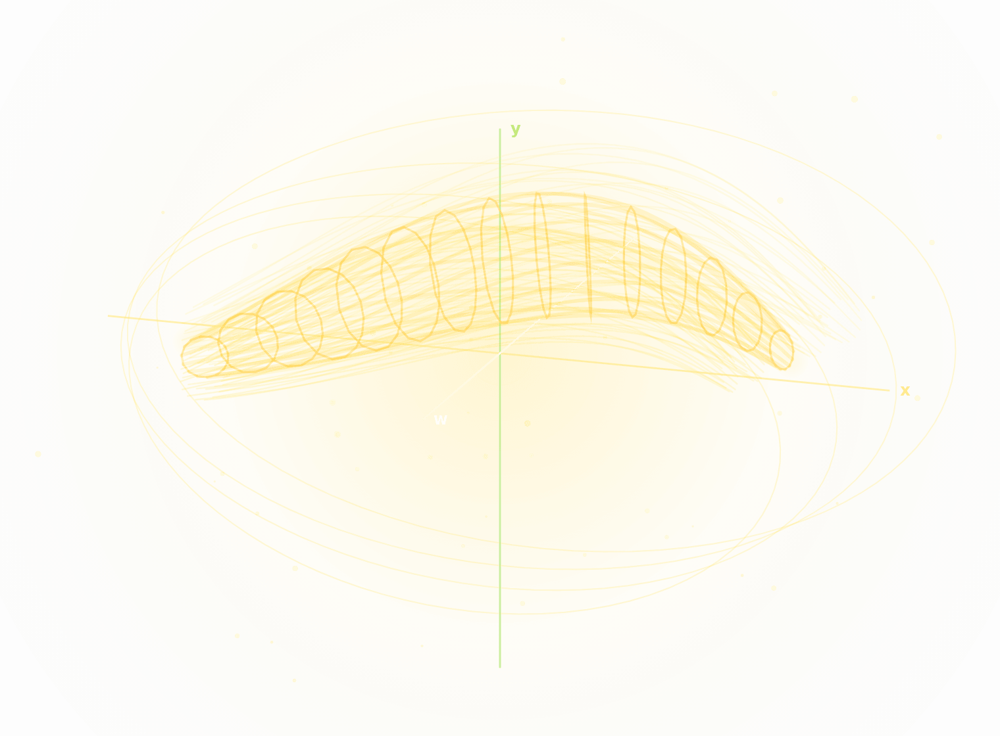
Frame 6, at 2.5 seconds: right-end hoops shrink and faint tail streaks appear at the left tip.
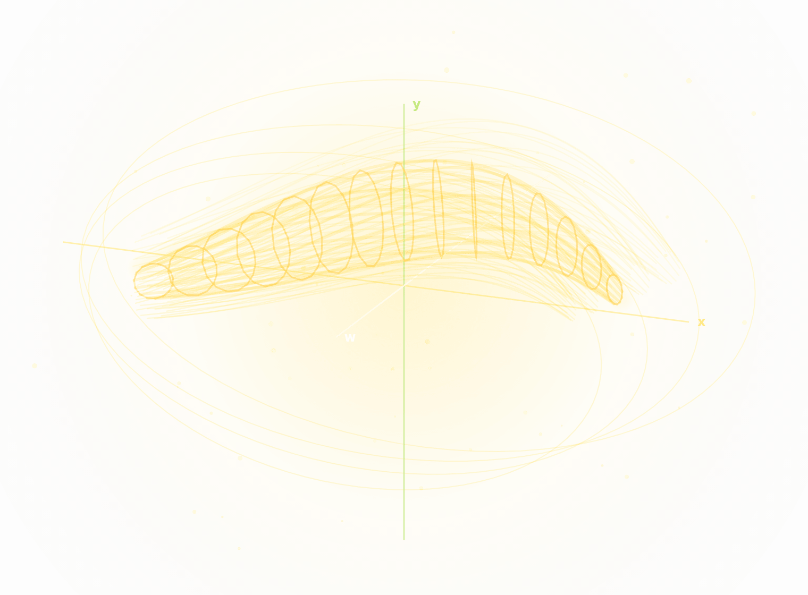
Frame 7, at 3.0 seconds: mid-turn, with the streak fan forming at the left end and the grid sweeping hard to the upper right.
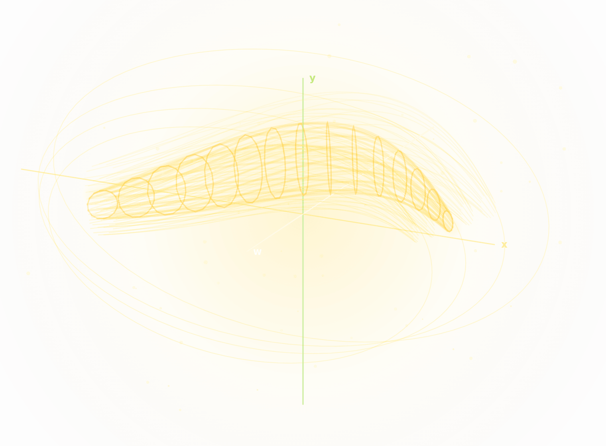
Frame 8, at 3.5 seconds: streaks thicken at the left while hoops cluster at the right end.
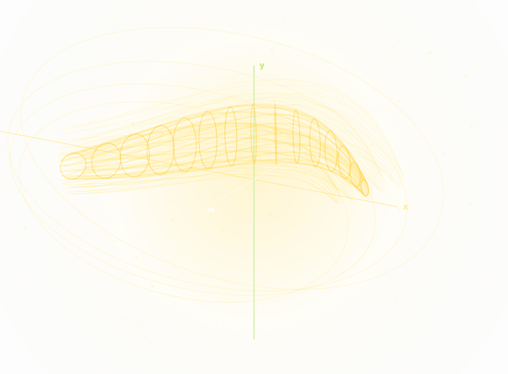
Frame 9, at 4.0 seconds: the tube twists further out of plane and the grid rings sweep beyond the frame edges.
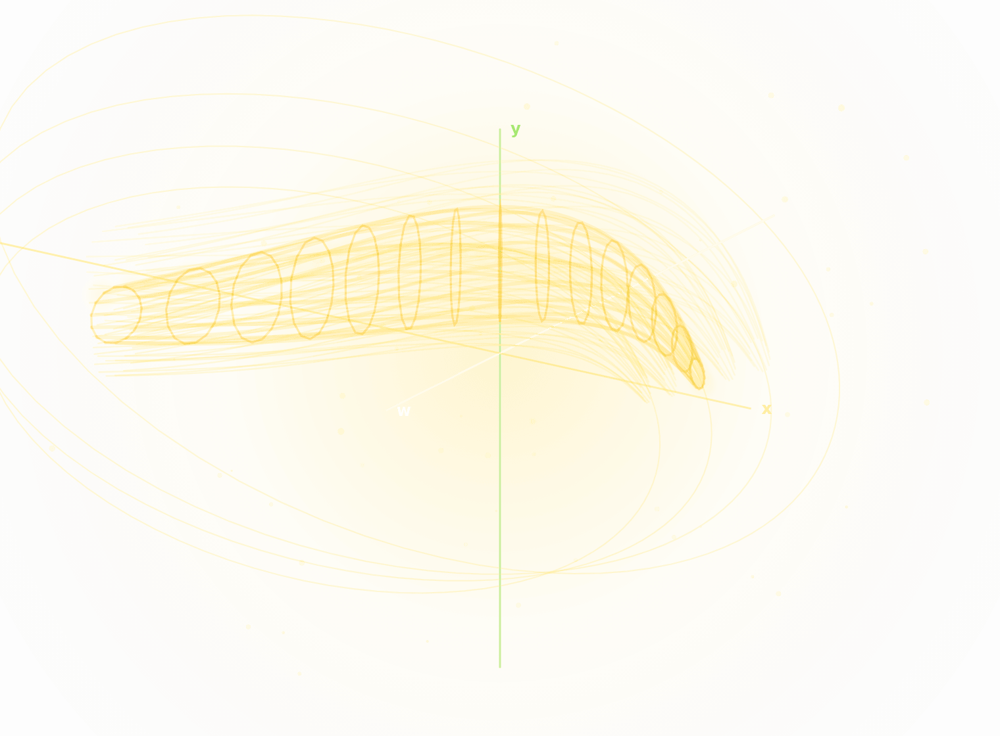
Frame 10, at 4.5 seconds: pronounced tail streaks on the left with the glow settled centre-right.
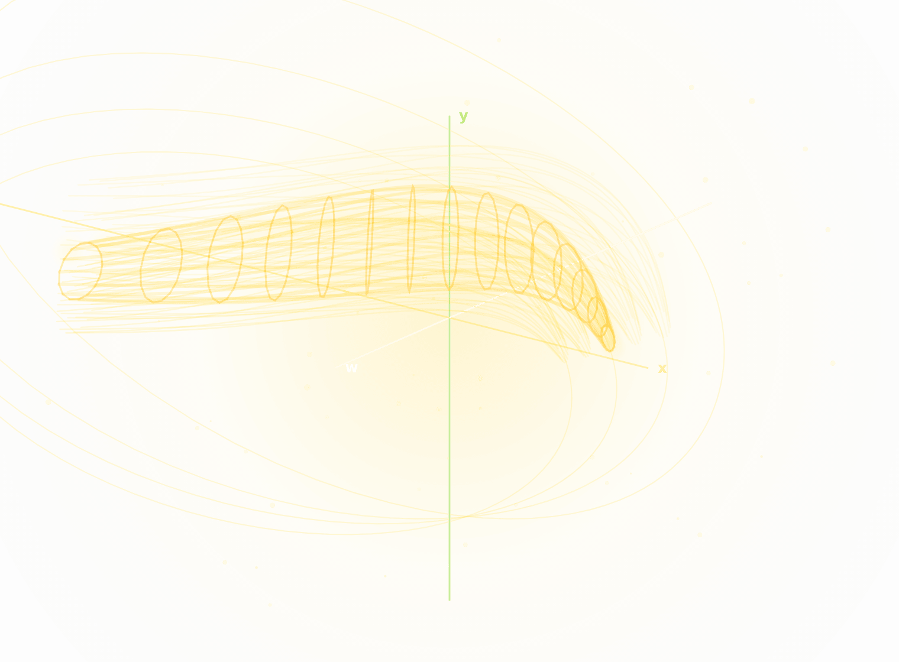
Frame 11, at 5.0 seconds: near edge-on, with a strong line fan at the left and tight hoops at the right.
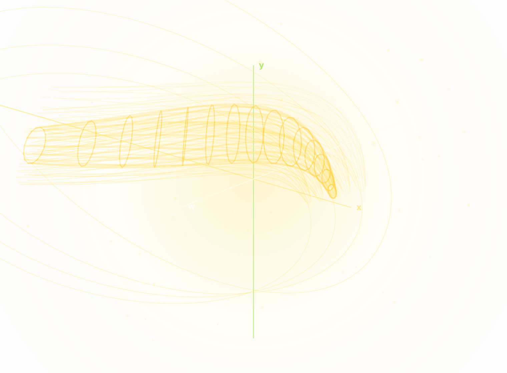
Frame 12, at 5.5 seconds: the widest, most rotated view of the series, closing the six-second arc.
seed 3141594D projectionclient JS
Task pipelines with less waiting and more throughput.
AgentPipe coordinates work across agent workflows, optimization passes,
database routines, recipes, financial interfaces, and reactive visualizers.
The repository mixes Python, TypeScript, JavaScript, Go, Rust, COBOL, and
Brainfuck modules around one simple idea: keep tasks moving fast.
Parallel task lanesBreak agent work into independent execution lanes that can move without blocking each other.
Optimization loopsRun improvement passes, validation scripts, and benchmarks as repeatable pipeline steps.
Dweb-ready modulesConnect distributed app logic to deterministic rendering, finance adapters, and data stores.
A deterministic 4D banana, rendered in the browser.
The animation above is not a video or static asset. It is generated from
fixed mathematical samples, rotated through 4D space, projected onto a
2D canvas, and drawn entirely on the client.
Clone the repository or download the source archive, install the Python and
Node dependencies from the README, and start experimenting with the task
engine modules.